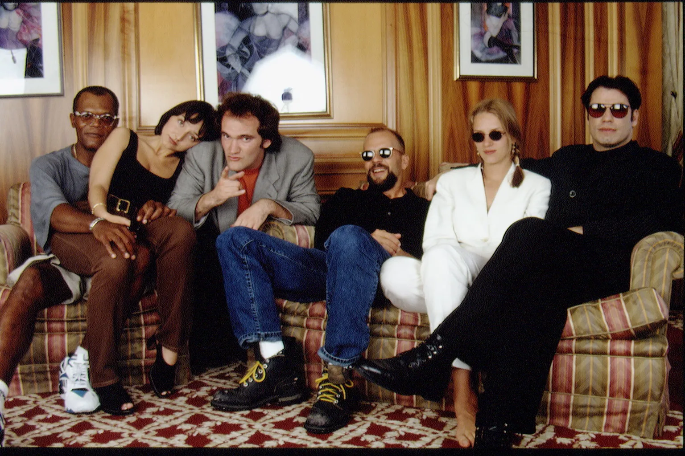

Reservoir Dogs supuso el inicio de una carrera de éxitos para Tarantino, y pronto aquellos dos primeros guiones que había escrito, Amor a quemarropa y Asesinos natos, fueron adaptados al cine por Tony Scott y Oliver Stone. También comenzaron a lloverle algunas ofertas (Speed o Men in Black) que rechazó para centrarse en su próximo guion: Pulp Fiction (1994). Con una película protagonizada por Uma Thurman y John Travolta en la que mezcla las vidas de varios personajes del mundo de la delincuencia, creando una trama por episodios en forma de flashbacks revolucionaria, en el que se entremezclan varias historias desordenadas temporalmente. Esto volvió a causar un gran impacto en los críticos y obtuvo la Palma de Oro en Cannes y siete nominaciones a los Óscar, de los que se llevó el de Mejor Guión.
Reparto
- John Travolta - Vincent Vega.
- Uma Thurman - Mia Wallace.
- Samuel L. Jackson - Jules Winnfield.
- Bruce Willis - Butch Coolidge.
- Maria de Medeiros - Fabienne.
- Tim Roth - Pumpkin o Ringo.
- Amanda Plummer - Yolanda o Honey Bunny.
- Ving Rhames - Marsellus Wallace.
- Harvey Keitel - Winston Lobo.
- Eric Stoltz - Lance.
- Christopher Walken - Capitán Koons.
- Rosanna Arquette - Jody.